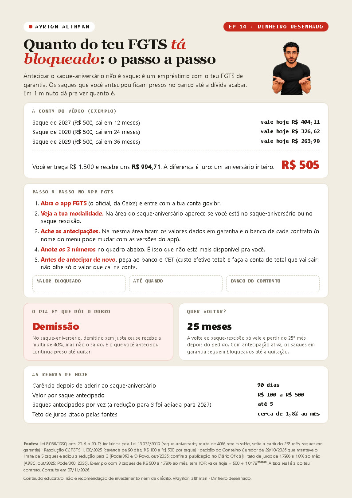

Dinheiro desenhado · EP 14
Quanto do teu FGTS tá bloqueado
Antecipar o saque-aniversário não é saque: é um empréstimo com o teu FGTS de garantia. O que você antecipou fica preso no banco até a dívida acabar. Em 1 minuto dá pra ver quanto é.
Baixar o passo a passo em PDFPasso a passo no app FGTS
- Abra o app FGTS (o oficial, da Caixa) e entre com a tua conta gov.br.
- Veja a tua modalidade. Na área do saque-aniversário aparece se você está no saque-aniversário ou no saque-rescisão.
- Ache as antecipações. Na mesma área ficam os valores dados em garantia e o banco de cada contrato (o nome do menu pode mudar com as versões do app).
- Anote 3 números: o valor bloqueado, até quando e o banco do contrato. É isso que não está mais disponível pra você.
- Antes de antecipar de novo, peça ao banco o CET (custo efetivo total) e faça a conta do total que vai sair, não só do valor que cai na conta.
A conta do vídeo
Saque de 2027 (R$ 500, em 12 meses)R$ 404,11
Saque de 2028 (R$ 500, em 24 meses)R$ 326,62
Saque de 2029 (R$ 500, em 36 meses)R$ 263,98
Você entrega R$ 1.500 e recebe uns R$ 994,71. A diferença é juro.R$ 505
Exemplo a 1,79% ao mês, sem IOF. A taxa real é a do teu contrato.
O dia em que dói o dobro
Demissão
No saque-aniversário, demitido sem justa causa recebe a multa de 40%, mas não o saldo. E o que você antecipou continua preso até quitar.Quer voltar?
25 meses
A volta ao saque-rescisão só vale a partir do 25º mês depois do pedido. Com antecipação ativa, os saques em garantia seguem bloqueados até a quitação.As regras de hoje
Carência depois de aderir ao saque-aniversário90 dias
Valor por saque antecipadoR$ 100 a 500
Saques antecipados por vez (a redução para 3 foi adiada para 2027)até 5
Teto de juros citado pelas fontes~1,8% a.m.

Fontes: Lei 8.036/1990, arts. 20-A a 20-D (Lei 13.932/2019) · Resolução CCFGTS 1.130/2025 · decisão do Conselho Curador de 29/10/2026 que manteve o limite de 5 saques (confira a publicação no Diário Oficial) · teto de juros de 1,79% a 1,8% ao mês (ABBC, out/2025). Consulta em 07/11/2026.
Episódio novo de seg, qua e sex no @ayrton_althman. Conteúdo educativo, não é recomendação de investimento nem de crédito.